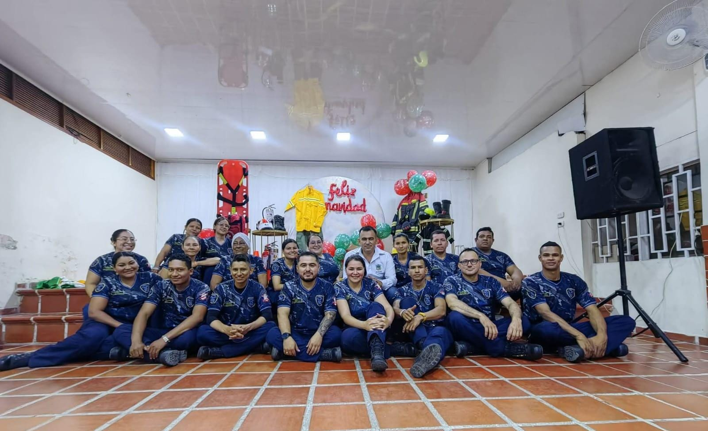
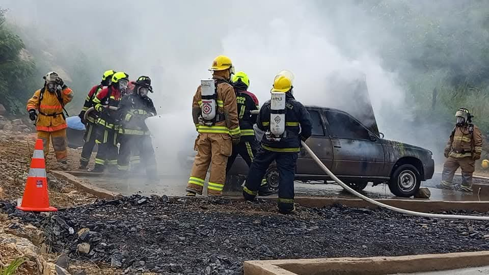

Fue creado mediante Personería Jurídica No. 163 del 8 de marzo del 2010 expedida por la Secretaría de Gobierno del Departamento de Bolívar. El lema del Cuerpo de Bomberos Voluntarios de Santa Rosa Del Sur es el adoptado por sus fundadores: "VALOR, ABNEGACIÓN Y DISCIPLINA", y deberá ser utilizado en todos los documentos que se emitan en la Institución.

El Cuerpo de Bomberos Voluntarios de Santa Rosa Del Sur, tiene como objeto social y funciones, además de las previstas en el artículo 2 de la Ley 1575 de 2012, la gestión integral del riesgo contra incendio, los preparativos y atención de rescates en todas sus modalidades y la atención de incidentes con materiales peligrosos e igualmente apoya la atención de otras emergencias y desastres.
Desarrolla programas de prevención de incendios, Seguridad Humana y otras calamidades conexas...
Atención prehospitalaria y demás actividades permitidas...

Solis Catherine Huertas Fula
Edilma Rosa Madrid Bayona
Samuel León
Francisco Guerra
Ana Isabel Rodríguez
Yadis Pérez Cacerez
Gabinson Gutiérrez
Diego Fernando Vargas
Claudia Montero Torres
Yeison Alexander Bedoya
Daniel Porras Carvallido
Gloria Marcela Torres Acero
Aldair Parrado